Interactive Elements
Elements- Red text ‘Slave to the Algorithm’ cursor
- Slave to the Algorithm link in blue
- Links in the form of the author names to different works in black
- Links turn grey when cursor hovers over
-
Works Found
- Articulation by Connor McNamara
- Music is playing, the bubble moves with the user’s head as the bubble changes colour. When the music is stopped the colors stop changing.
- Yasmin Harith Brewer
- User changes facial expressions to interact with the virtual garden, facial expressions tracked.
- Yang Hu
- Users are able to navigate a 3D model created by the author using their keyboard controls and explore other games from the home page.
WORKSHOP ACTIVITY 1: USER INPUT
Exploring alternative methods of interacting with a web-based script and how users can play with them.
Browse the experimentations I documented below
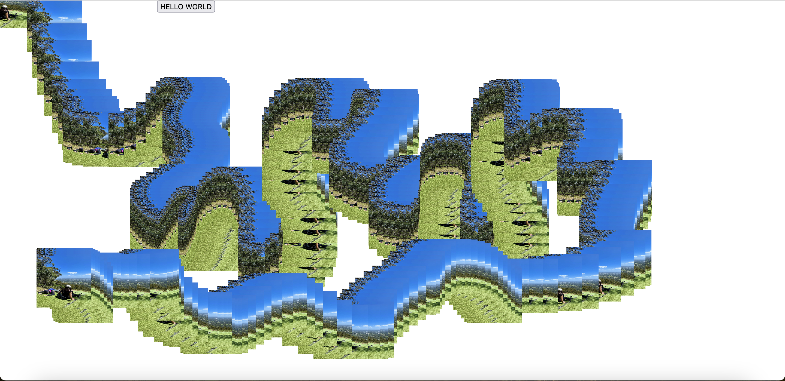
 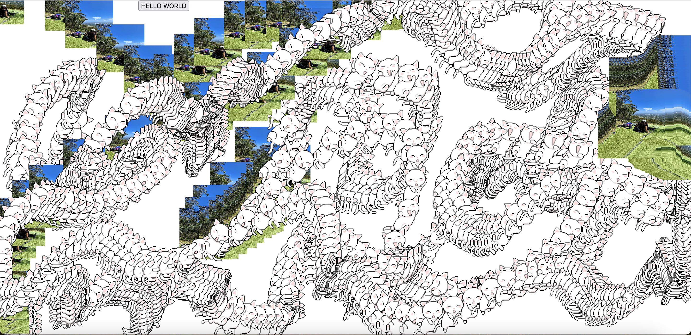
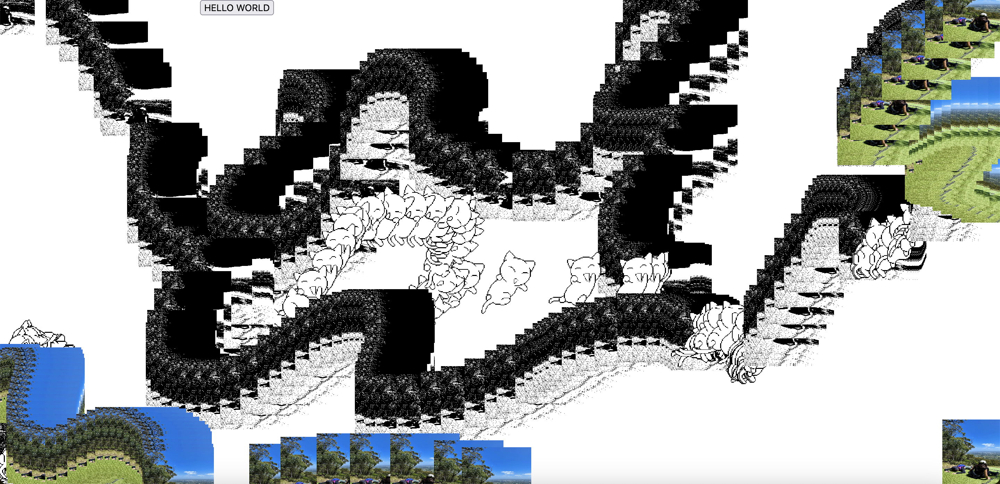
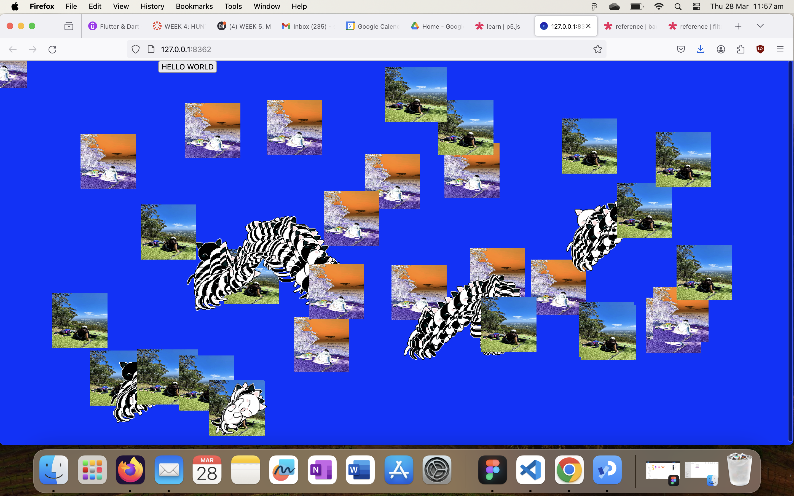
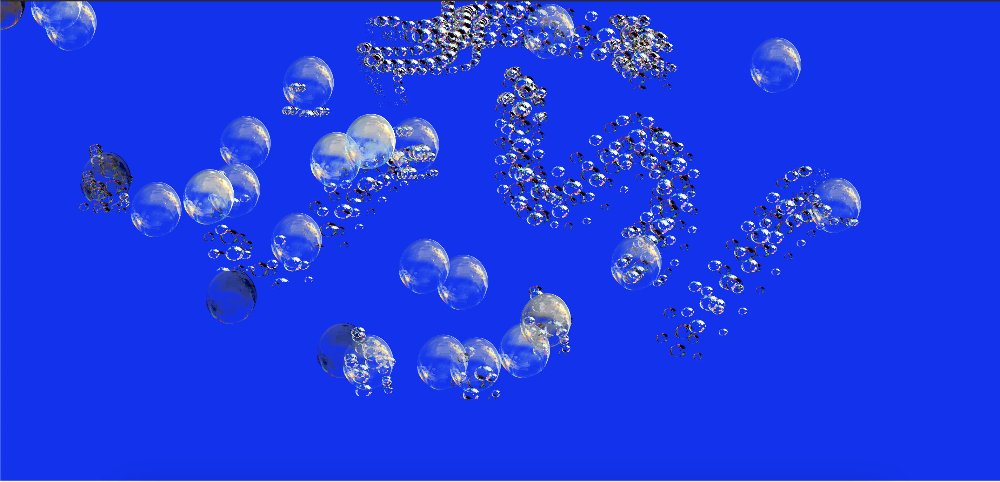
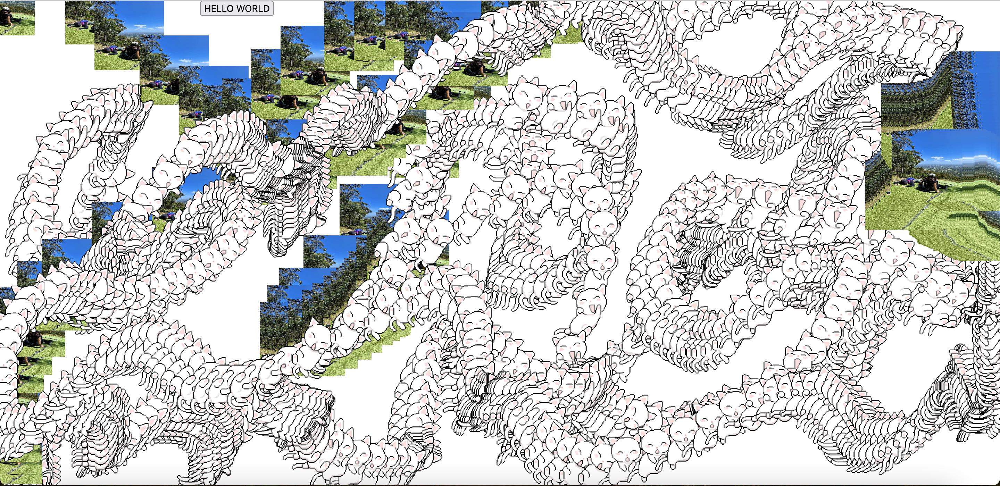
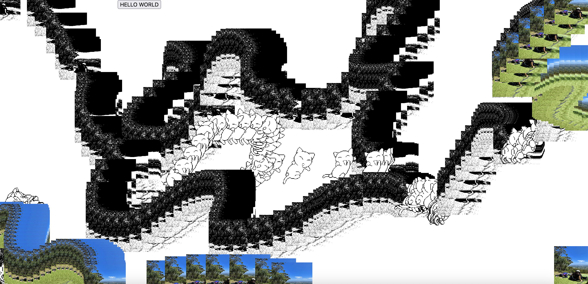
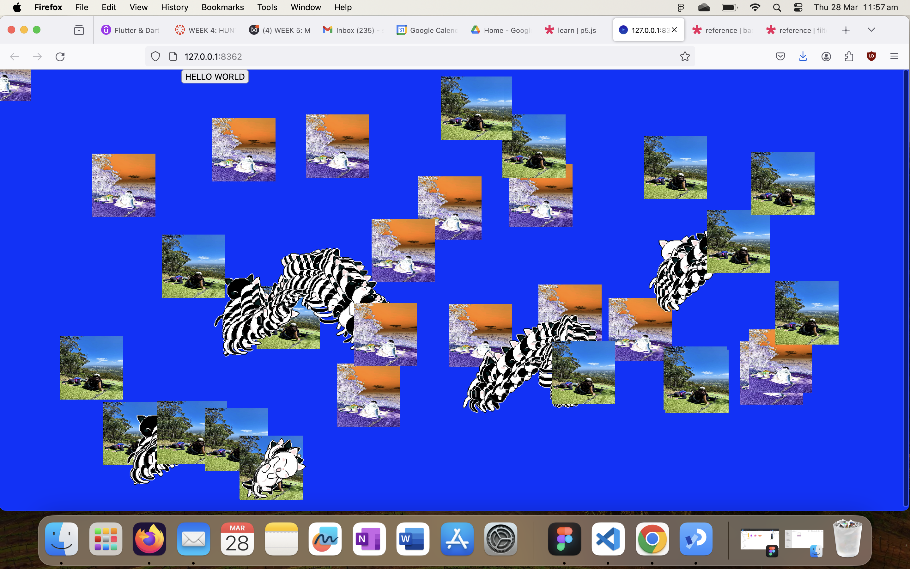
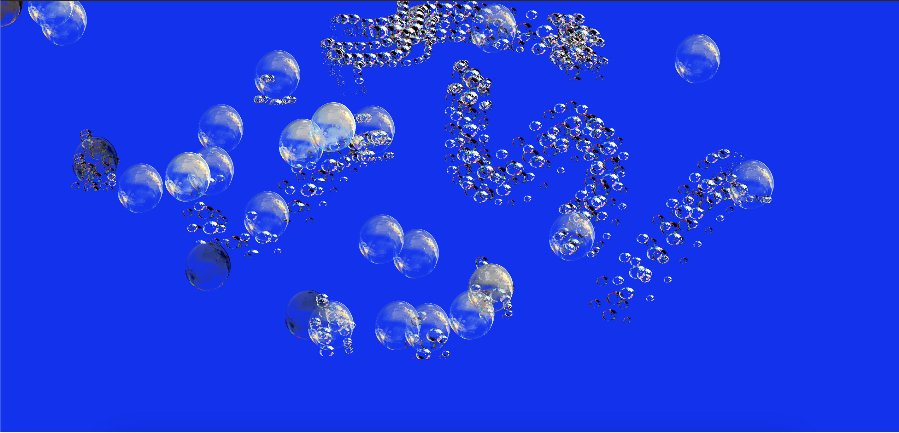
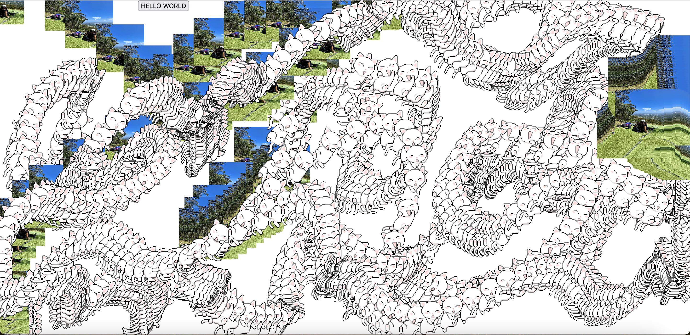
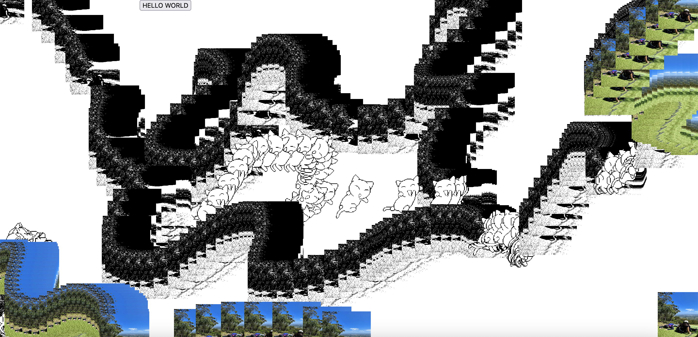
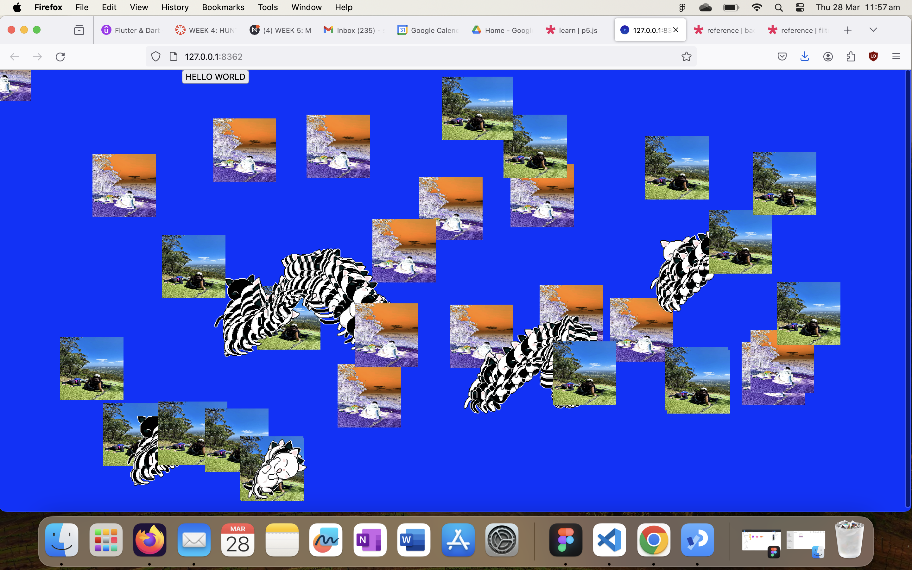
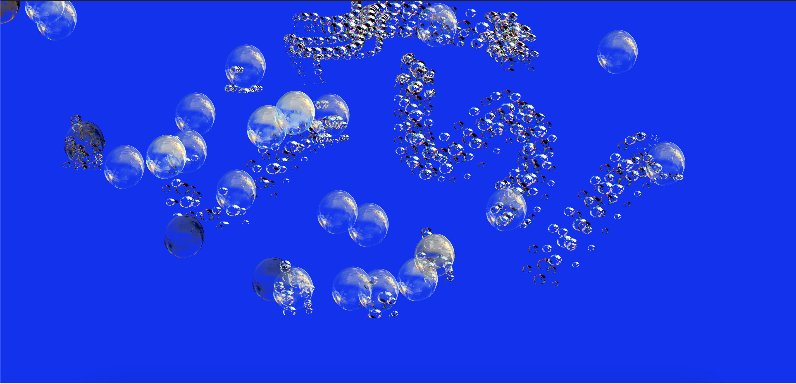
WORKSHOP ACTIVITY 2: IMAGE & SOUND
We ran through ways that we can utilise p5 libraries so that we can incorporate image, video and sound, so that we can then use filters, effects, pixel manipulation and pixel control.
- How to add images & video
- Filters, effects and pixel-manipulation
- Keyboard control